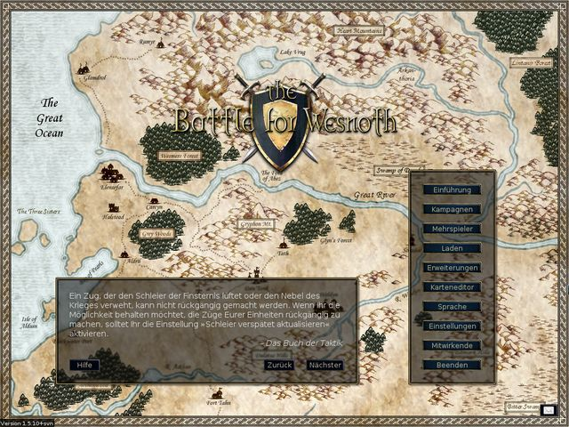
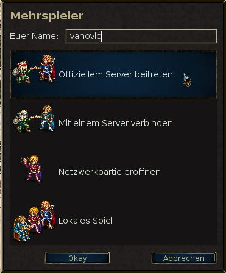
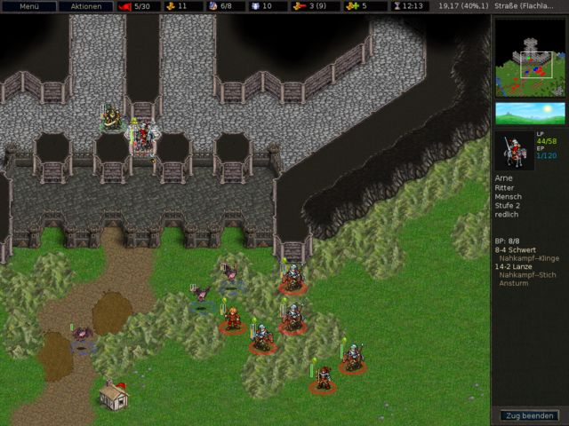
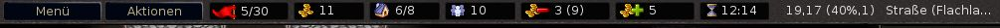
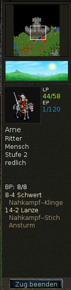
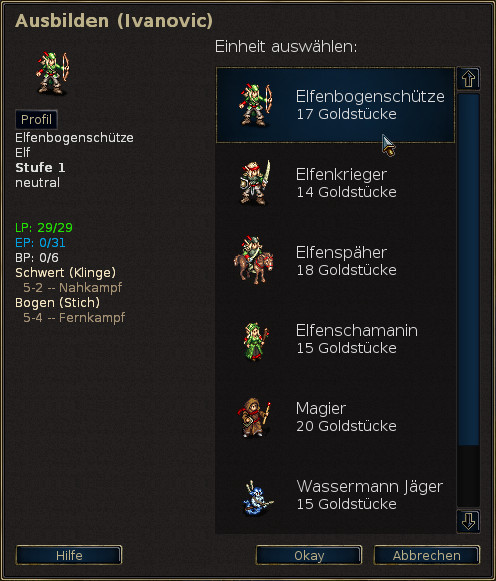

Inhaltsverzeichnis
Tabellenverzeichnis
The Battle for Wesnoth ist ein rundenbasiertes Strategiespiel in einem Fantasyszenario.
Erschafft eine große Armee und führt Eure Soldaten auf ihrem Weg vom Rekrut hin zum Veteran. Beruft Eure besten Truppen in späteren Schlachten ein, um so eine Armee aufzubauen, der niemand gewachsen ist! Wählt Einheiten aus einer großen Anzahl an Spezialisten und erschafft so eine handverlesene Truppe, stark genug um auf jedwedem Gelände dem Gegner zu widerstehen.
Wesnoth kennt viele verschiedene Geschichten, die gespielt werden wollen. Ihr könnt Orks, Untote und Banditen auf ihren Zügen durch das Königreich von Wesnoth bekämpfen; streitet an der Seite von Drachen in luftigen Höhen, mit Elfen in den grünen Reichen der Aethenwälder, Zwergen in den tiefen Hallen von Knalga oder sogar mit dem Meervolk in der Perlenbucht. Ihr könnt kämpfen, um den Thron von Wesnoth wiederzuerlangen, Eure gefürchtete Macht über die Untoten verwenden, um die Lande der Sterblichen zu unterjochen oder sogar Euren orkischen Stamm zum Sieg gegen die Menschen führen, die Euch Eures Landes beraubt haben.
Ihr werdet aus über zweihundert Einheiten-Arten (Infanterie, Kavallerie, Bogenschützen und Magier sind nur der Anfang) auswählen können und Begebenheiten von Kleineinheiten-Hinterhalten bis zu Zusammenstößen von gewaltigen Armeen auskämpfen können. Zudem könnt Ihr Freunde oder Fremde in epischen Mehrspielerschlachten bekriegen.
Battle for Wesnoth is open-source software, and a thriving community of volunteers cooperates to improve the game. You can create your own custom units, write your own scenarios, and even script full-blown campaigns. User-maintained content is available from an add-on server, and the very best of it is incorporated into Battle for Wesnoth’s official releases.
Inhaltsverzeichnis
Der bekannte Teil des großen Kontinents, auf dem Wesnoth liegt, ist in drei Bereiche unterteilt: Die Nordlande, hauptsächlich bewohnt von Gesetzlosen, das Königreich von Wesnoth und sein gelegentliches Fürstentum, Elensefar sowie das Reich der Elfen in den Aethenwäldern und dahinter im Südosten.
Das Königreich von Wesnoth liegt im Herzen des Landes. Seine natürlichen Grenzen sind der Große Fluss im Norden, die Dulatus-Hügel im Osten und Süden, der Rand der Aethenwälder im Südwesten und der Ozean im Westen. Elensefar, eine ehemalige Provinz von Wesnoth, wird vom großen Fluss im Norden, einer kaum ausgehandelten Grenze mit Wesnoth im Osten, der Perlenbucht im Süden und dem Ozean im Westen begrenzt.
Die Nordlande sind die wilde Gegend nördlich des großen Flusses. Verschiedene Gruppierungen von Orks, Zwergen, Barbaren und Elfen bevölkern die Gegend. Im Norden und Osten liegt der Wald von Lintanir, wo sich das große Königreich der Nord-Elfen um seine eigenen mysteriösen Geschäfte kümmert.
Quer über das Land sind Dörfer verstreut, in denen Ihr Eure Truppen heilen und die Einnahmen sammeln könnt, die Ihr zur Unterstützung Eurer Armee benötigt. Ihr werdet auch Berge und Flüsse überwinden, Wälder, Hügel und Tundra überbrücken und offene Wiesen überqueren müssen. In jeder dieser Landschaften haben sich verschiedene Kreaturen heimisch gemacht und können sich dort leichter fortbewegen sowie besser kämpfen.
In der Welt von Wesnoth leben Menschen, Elfen, Zwerge, Orks, Draken, Saurianer, das Meervolk, Naga und viele noch seltsamere und wunderlichere Rassen. In verfluchten Landen wandeln Untote, Geister und Spuke; Monster lauern in ihren Ruinen und Verliesen. Jeder davon hat sich an bestimmte Umgebungen gewöhnt. Menschen bewohnen hauptsächlich die gemäßigten Wiesen. In den Hügeln, Bergen und unterirdischen Höhlen sind hauptsächlich Orks und Zwerge zu Hause. Zwischen den hohen Baumstämmen der Wälder leben zumeist die Elfen. In den Ozeanen und Flüssen liegt das nasse Reich des Meervolkes und der Naga.
For game purposes, the races group into factions; for example, orcs often cooperate with trolls, and elves or dwarves with humans. Some other factions reflect divisions within human society — loyalists vs. outlaws, for example. In most campaigns, you will control units drawn a single faction. But sometimes factions make alliances with others, so you may face more than one faction in a scenario.
Wenn Wesnoth gestartet wird, zeigt es ein Hintergrundbild sowie eine Spalte an Knöpfen, die das Hauptmenü genannt werden. Diese Knöpfe können nur mit der Maus bedient werden. Dem Ungeduldigen empfehlen wir, den »Sprache«-Knopf zu klicken, um Eure Sprache einzustellen; anschließend den Knopf namens »Einführung«, um die Einführung zu spielen; und dann spielt die Kampagne »Die Geschichte zweier Brüder« durch das Klicken des »Kampagnen«-Knopfs mit anschließender Auswahl aus der folgenden Liste.

- Einführung
- The tutorial is a real, but basic, game which teaches you some of the basic controls needed to play the game. Winning or losing is not important here, but learning what to do is. Click the Tutorial button to play. In the Tutorial you are in the role of the prince Konrad or the princess Li’sar, learning from the Elder Mage Delfador - pay attention or he might turn you into a newt.
- Kampagnen
- Wesnoth war ursprünglich dazu ausgelegt, Kampagnen zu spielen. Kampagnen sind eine Folge von zusammenhängenden Szenarien. Klickt auf diesen Knopf, um eine neue Kampagne zu beginnen. Ihr werdet eine Liste der auf Eurem Computer vorhandenen Kampagnen angezeigt bekommen (weitere können heruntergeladen werden, falls Ihr es wünscht). Wählt Eure Kampagne aus und klickt auf »Okay«, um sie zu starten oder auf »Abbrechen«, um zurückzukehren. Jede Kampagne besitzt eine Einstufung: Leicht, Mittel (Normal) oder Schwierig. Wir empfehlen Mittel, da diese Einstufung herausfordernd ist, aber nicht zu schwierig. Ihr könnt die Einstufung nicht während einer Kampagne wechseln, der Leitfaden zur Grundsätzlichen Strategie wird Euch sicherlich helfen. Nachdem Ihr die Einstufung gewählt habt, beginnt das erste Szenario der Kampagne.
- Mehrspieler
- Klickt diesen Knopf, um einzelne Szenarien gegen einen oder mehrere Gegner zu bestreiten. Ihr könnt das Spiel im Internet spielen oder auch an Eurem Rechner, gegen den Computer oder menschliche Gegner. Wenn Ihr diesen Knopf auswählt erscheint ein Dialog, der es Euch erlaubt zu wählen, wie Ihr das Szenario spielen wollt. Um mehr darüber zu erfahren, lest Szenarien.
- Laden
- Wählt diesen Knopf, um ein zuvor gespeichertes Spiel zu laden. Ihr werdet mit einem Dialog konfrontiert, der die Spielstände anzeigt. Wählt das gewünschte Spiel aus und klickt auf »Okay«, um es zu laden und fortzusetzen oder »Abbrechen«, um zum Hauptmenü zurückzukehren. Falls Ihr einen Spielverlauf wählen wollt, solltet Ihr die »Spielverlauf«-Box ankreuzen. Das geladene Spiel wird dann alle Züge von Anfang an abspielen, während Ihr zuseht.
- Erweiterungen
- Mit diesem Knopf könnt Ihr Euch mit einem Kampagnenserver verbinden, der viel an von normalen Benutzern erstellten Inhalt bereithält. Unter den Dingen, die hier verfügbar sind, gibt es viele Kampagnen, Mehrspielerepochen (die Randbedingungen für Mehrspielerpartien definieren) und -karten. Über den »Erweiterungen entfernen«-Knopf könnt Ihr sie wieder löschen, falls Ihr sie nicht mehr benötigt.
- Karteneditor
- Dieser Knopf bringt Euch in den Karteneditor, in dem Ihr eigene Karten für Mehrspieler-Partien oder um Eure eigenen Kampagnen darauf aufzubauen erstellen könnt.
- Sprache
- Hier könnt Ihr Eure Sprache einstellen und mittels »Okay« bestätigen oder aber über »Abbrechen« die aktuelle Sprache beibehalten. Wenn Wesnoth das erste Mal gestartet wird, wird es auf Englisch oder Eure Systemsprache gesetzt, falls diese herauszufinden ist. Wenn Ihr sie jedoch ändert, wird Wesnoth von dann an in dieser Sprache gestartet.
- Einstellungen
- Um die Einstellungen zu ändern, klickt hier.
- Mitwirkende
- Dieser Knopf zeigt Euch eine Liste derjenigen, die zu Wesnoth beigetragen haben. Ihr werdet sie auch häufig auf irc.freenode.org:6667 in #wesnoth in Echtzeit antreffen können.
- Beenden
- Mit diesem Knopf könnt Ihr Wesnoth beenden.
- Hilfe
- Falls Ihr auf diesen Knopf klickt, öffnet sich das in das Spiel integrierte Hilfesystem. Hier werdet Ihr Informationen über Einheiten und alle anderen, das Spiel betreffenden Themen finden. Die meisten dieser Themen werden in diesem Handbuch behandelt.
- Nächster
- Klickt hierauf, um den nächsten Tipp aus dem »Buch von Wesnoth« zu erhalten.
- Zurück
- Klickt hierauf, um den vorangegangenen Tipp aus dem »Buch von Wesnoth« zu erhalten.
- Briefumschlag
- Durch das Klicken auf diesen Knopf (das Piktogramm eines Briefumschlags) öffnet sich ein Dialog, in dem Ihr die Übertragung von Zusammenfassungen erlauben oder abstellen könnt, die uns dabei helfen, Kampagnen weiter zu verbessern. Alle übertragenen Daten sind anonym.
An sich gibt es zwei verschiedene Spielmodi in Battle for Wesnoth:
- Spielt eine Reihe von aufeinander folgenden Szenarien gegen den Computer. Dies wird auch als »Kampagne« bezeichnet.
- Spielt ein einzelnes Szenario gegen den Computer oder menschliche Widersacher.
Campaigns are sequences of battles with a connecting storyline. Typical campaigns have about 10-20 scenarios. The main advantage with campaigns is that they allow you to develop your army. As you complete each scenario, the remaining units at the end are saved for you to use in the next scenario. If you choose not to use a unit at all during a scenario it is carried over to the next, so you don’t lose units you don’t use.
Eine Kampagne ist die übliche Spielart, für die Wesnoth gedacht ist; vermutlich die erfreulichste, und ist der empfohlene Weg für neue Spieler, das Spiel zu lernen.
Um ein einzelnes Szenario abzuschließen bedarf es zwischen 30 Minuten und 2 Stunden Spielzeit. Es ist die schnellste Art zu spielen, aber die Einheiten werden nicht gespeichert und man kann keine Einheiten aus Kampagnen verwenden. Szenarien können gegen den Computer oder gegen andere Spieler – entweder über das Internet oder an Ihrem Rechner – gespielt werden. Szenarien werden über den »Mehrspieler«-Knopf aus dem Hauptmenü aufgerufen.
In general multiplayer games are played against other players via the Internet (you can also run them on your LAN if you have one). All these games are co-ordinated through the Wesnoth multiplayer server. Multiplayer games can take anywhere from 1 hour to 10 hours, depending on how many players there are (and the size of the map). The average time is between 3 to 7 hours. Games can be saved and loaded as many times as you like. So, it’s possible for some games to last 1 or 2 weeks, even though the play time is only a few hours. You cannot carry over units in multiplayer from one scenario to the next, so building up your army’s strength is possible only within the scenario.
Es gibt mehrere Wahlmöglichkeiten, die Euch geboten werden, wenn der »Mehrspieler«-Knopf benutzt wird:

Dies ist Ihr Name auf dem Mehrspieler Server. Wenn Ihr einen Account im Wesnoth Forum habt, so könnt Ihr den Nutzernamen und das zugehörige Passwort benutzen, um mit diesen Daten den Server zu betreten. Wählt Ihr einen bereits registrierten Namen, so wird bei dem Versuch, dem Server beizutreten ein Fenster mit einem Eingabefeld erscheinen, in dem Ihr das korrekte Passwort angeben müsst. Einen bereits registrierten Namen könnt Ihr nicht ohne das zugehörige Passwort wählen.
Diese Auswahl verbindet Euch direkt mit dem offiziellem Server. Ihr werdet Euch kurze Zeit später im Mehrspielerbereich wiederfinden, in dem Ihr Eure Spiele nach Euren Wünschen erstellen könnt, wo bereits viele Spiele eröffnet sind und wohl sogar einige Spieler bereits darauf warten, einem neuen Wettkampf beizutreten.
Diese Auswahl öffnet eine Dialog-Box, in der Ihr die Adresse des Rechners eingeben könnt, zu dem Ihr Euch verbinden wollt. Es findet sich hier auch ein Knopf »Liste Anzeigen«, mit dem Ihr Euch eine Liste der offiziellen Server anzeigen lassen könnt, die Ihr zum Ausweichen verwenden könnt, falls der Hauptserver zur Zeit nicht verfügbar ist.
Eine recht vollständige Liste von offiziellen und von Benutzern aufgesetzten Servern ist auf folgender Webseite zu finden: Mehrspielerserver.
Ihr könnt über diesen Menüpunkt auch Server erreichen, die von anderen Spielern gestartet wurden. Falls Ihr also einen Server in Eurem lokalen Netzwerk habt, gebt lediglich die Adresse und die Portnummer (Standard: 15000) ein. Falls Ihr Euch zum Beispiel mit einem Server verbinden wollt, der auf dem Rechner mit der Adresse 192.168.0.10 mit dem Standardport läuft, würdet Ihr in diesem Dialog folgendes eingeben: 192.168.0.10:15000
Um eine Mehrspielerpartie zu beginnen, ohne einen externen Mehrspieler-Server zu verwenden, müsst Ihr den Server selbst starten, der üblicherweise wesnothd heißt. Das Programm wird automatisch im Hintergrund gestartet, wenn diese Option gewählt wird; und wieder beendet, wenn alle Spieler den Server verlassen haben. Andere Spieler müssen sich zu Eurem Port 15000 über TCP verbinden können, um auf Eurem Server spielen zu können. Falls Ihr Euch hinter einer Firewall befindet, solltet Ihr vermutlich Eure Firewall-Einstellungen anpassen, um eingehende Verbindungen auf Port 15000 zuzulassen und Eurer Firewall mitteilen, diesen Netzverkehr an die Maschine weiterzuleiten, auf der der Server ausgeführt wird. Für Spiele auf einem öffentlichen Server oder bei jemand anderem sollte es nicht notwendig sein, Eure Firewall-Einstellungen zu ändern.
Damit startet Ihr ein Spiel, das nur auf Eurem Computer läuft. Ihr könnt es als Hotseat-Spiel (»Heißer Stuhl«) spielen, in dem jeder am selben Rechner spielt und die Züge im heißen Stuhl durchführt. Hotseat-Spiele benötigen die selbe Spielzeit wie Spiele über das Internet. Ihr könnt aber auch nur ein Spiel gegen KI-Gegner statt menschliche Spieler spielen. Dies kann eine gute Art sein, sich mit den verschiedenen Karten vertraut zu machen, die in Mehrspielerpartien verwendet werden, bevor Ihr gegen menschliche Gegner antretet. Es kann auch dazu verwendet werden, die Fähigkeiten von Einheiten der verschiedensten Fraktionen in diesen Spielen auszutesten. Natürlich könnt Ihr auch beides in einem Spiel mischen, also gemeinsam mit einem Freund in einem Spiel gegen einen Computergegner anzutreten.

Unabhängig davon ob Ihr ein Szenario oder eine Kampagne spielt, die grundsätzliche Anordnung des Spielbildschirmes ist die gleiche. Den Großteil des Bildes umfasst eine Karte, die die gesamten Handlungen anzeigt, die im Spiel stattfinden. Um die Karte herum gibt es verschiedene Elemente, die nützliche Informationen über das Spiel bieten und in folgendem genauer beschrieben werden.

Am oberen Rand des Schirmes finden sich von links nach rechts folgende Teile:
- Menü-Knopf
- Aktionen-Knopf
- Runden-Anzeiger (aktuelle Runde/maximale Anzahl von Runden)
- Eigenes Gold
- Dörfer (Eure Dörfer/Gesamtanzahl an Dörfern)
- Anzahl der eigenen Einheiten
- Unterhaltskosten
- Eigenes Einkommen
- Aktuelle Zeit oder restliche Zeit (in zeitbasierten Mehrspielerpartien)
- Aktuelle Feldposition (X-Koordinate, Y-Koordinate)
- Verteidigung und Bewegung der aktuell gewählten Einheit auf dem markierten Feld
- Aktueller Geländetyp des Feldes

Den rechten Rand hinunter von oben nach unten findet sich:
- Komplette Karte, skaliert
- Anzeige der Tageszeit
- Einheitenbeschreibung der zuletzt ausgewählten Einheit
- »Zug beenden«-Knopf
Wenn Ihr ein Szenario oder eine Kampagne zum ersten Mal startet, werdet Ihr nur einige wenige Einheiten auf der Karte vorfinden. Eine dieser Einheiten wird Euer Anführer sein (erkennbar durch ein kleines, goldenes Kronensymbol). Euer Anführer befindet sich üblicherweise in einer Burg auf einem speziellen Feld, das Burgfried genannt wird. Wann auch immer sich Euer Anführer auf einem Burgfried befindet (nicht nur Euer eigener sondern auch jener eines feindlichen Schlosses, das Ihr einnehmt) und Ihr genügend Gold habt, könnt Ihr Einheiten für Eure Armee ausbilden. In späteren Szenarien könnt Ihr erfahrene Einheiten einberufen, die frühere Szenarien überlebt haben. Von nun an könnt Ihr beginnen, Eure Armee aufzubauen, um den Gegner zu bezwingen.
The first thing you will probably want to do is recruit your first
unit. Press Ctrl-R (or right click on an empty castle hex
and select "Recruit") and you will be able to recruit a unit from a list of
all the units available to you. Each recruit is placed on an empty castle
hex. Once you have filled the castle, you cannot recruit any more until
units move off. Your opponent’s commander is similarly placed on its
castle keep and will begin by recruiting its troops — so
don’t dilly-dally looking at the scenery, there’s a battle to be
won.
Am Ende jedes erfolgreichen Szenarios werden alle überlebenden Truppen automatisch gespeichert. Zu Beginn des nächsten Szenarios können sie auf eine dem Rekrutieren ähnliche Weise einberufen werden. Einberufene Einheiten sind oft erfahrener als Rekruten und üblicherweise eine bessere Wahl.
Alle Spiel-Arten verwenden die selben Soldaten, auch Einheiten genannt. Jede Einheit wird durch ihre Rasse, die Stufe und die Klasse gekennzeichnet. Jede Einheit hat ihre Stärken und Schwächen, basierend auf ihren Resistenzen, dem aktuellen Gelände und der Stufe. Die kompletten Details finden sich in der Spielhilfe.
As your troops gain battle experience, they will learn more skills and become stronger. They will also die in battle, so you’ll need to recruit and recall more when that happens. But choose wisely, for each has strengths and weaknesses a cunning opponent will quickly exploit.
Lest Euch die Ziele, die zu Beginn jedes Szenario eingeblendet werden, sorgfältig durch. Üblicherweise werdet Ihr den Sieg erringen, wenn Ihr die gegnerischen Anführer bezwingt und verlieren, wenn Euer eigener Anführer gestorben ist. Szenarien können jedoch auch andere Siegesbedingungen aufweisen. Beispielsweise müsst Ihr Euren Anführer zu einem bestimmten Punkt führen, Notdürftige aus ihrer misslichen Lage befreien, ein Rätsel lösen oder einer anstürmenden Heerschar für eine bestimmte Zeit Paroli bieten.
Wenn Ihr in einem Szenario den Sieg errungen habt, ändert sich die Schaltfläche Zug beenden in Szenario beenden und die Karte wird mit einem grauen Schleier überzogen. Nun könnt Ihr beispielsweise Eure Speicheroptionen ändern oder (falls Ihr Euch in einer Mehrspielerpartie befindet) Euch mit anderen Spielern unterhalten, bevor Ihr mit dem Spiel fortfahrt.
Your army does not fight for free. It costs you gold to recruit units and gold to maintain them. You start each scenario with gold carried over from previous scenarios (although each scenario ensures you have at least a minimum amount of gold to start if you didn’t carry over enough from previous scenarios) and can gain more by meeting scenario objectives quickly and, during a scenario, by controlling villages. Each village you control will give you two gold pieces income per turn. When you first start a scenario it is usually worthwhile to gain control of as many villages as you can to ensure you have sufficient income to wage war. You can see your current gold and current income at the top of the screen as described in the section on the game screen.
Am Anfang eines jeden Szenarios wird Euer Spielstand üblicherweise gesichert. Falls Ihr besiegt werdet, könnt Ihr es laden und erneut versuchen. Wenn Ihr es dann geschafft habt, werdet Ihr erneut gefragt, das nächste Szenario zu speichern und jenes zu spielen. Wenn Ihr das Spiel während eines Szenarios unterbrechen müsst, könnt Ihr Euren Zug speichern und ihn später wieder laden. Vergesst jedoch nicht, dass ein guter »Battle for Wesnoth«-Spieler nie während eines Szenarios speichern muss. Jedoch tendieren Anfänger dazu, es ziemlich häufig zu tun.
Dies sind die voreingestellten Tastenkürzel. Ihr könnt sie im Einstellungsmenü an Eure Wünsche anpassen.
Tabelle 2.1. Steuerung und Tastenkürzel
| F1 | Hilfe zu Battle for Wesnoth |
| Pfeil-Tasten | Scrollen |
| Linksklick | Einheit auswählen, Einheit bewegen |
| Rechtsklick | Hauptmenü, Aktion abbrechen |
| Mittlere Taste bei einer Dreitastenmaus | An der Zeigerposition zentrieren |
| Escape | Spiel beenden, Menü beenden, Nachricht abbrechen |
| Strg-r | Einheit ausbilden |
| Strg-Alt-r | Weitere Einheit ausbilden |
| Alt-r | Einheit einberufen |
| u | Letzten Zug rückgängig machen (nur deterministische Aktionen können rückgängig gemacht werden) |
| r | Zug wiederherstellen |
| m | Einen anderen Spieler benachrichtigen (Mehrspieler-Modus) |
| Strg-m | Alle Verbündeten benachrichtigen (Mehrspieler-Modus) |
| Alt-m | Alle benachrichtigen (Mehrspieler-Modus) |
| Alt-c | Gesprächsprotokoll anzeigen |
| n | Die Einheiten durchgehen, die sich noch bewegen können |
| N | Die Einheiten durchgehen, die sich noch bewegen können, in umgekehrter Reihenfolge |
| Leertaste | Zug der Einheit beenden und zur nächsten Einheit springen, die sich noch bewegen kann |
| Umschalt-Leertaste | Die aktuelle Einheit an ihrer Position behalten (ihren Zug beenden) |
| Strg-Leertaste | End this player’s turn |
| Strg-v | Gegnerische Züge anzeigen (wohin sich der Gegner im nächsten Zug bewegen kann) |
| Strg-b | Zeigt mögliche gegnerische Züge an, als ob Eure Einheiten nicht auf der Karte wären |
| Strg-j | Missionsziele anzeigen |
| Strg-f | Zwischen Vollbild-/Fenster-Modus umschalten |
| Strg-a | Beschleunigten Spielmodus ein-/ausschalten |
| Strg-g | Gitternetz einblenden |
| Strg-c | Beschriftungen entfernen |
| Strg-s | Spiel speichern |
| Strg-o | Spielstand laden |
| Strg-p | Das Einstellungsmenü aufrufen |
| Strg-q | Spiel beenden |
| / | Suchen (Beschriftung oder Einheit über Namen finden) |
| t | Unterbrochenen Einheiten-Zug fortsetzen |
| + | Hereinzoomen |
| - | Herauszoomen |
| 0 | Standardansicht wiederherstellen |
| Strg-n | Einheit umbenennen |
| 1-7 | Zeigt an, wie weit die aktuell ausgewählte Einheit sich in der entsprechenden Anzahl an Zügen bewegen kann. |
| l | Zum Anführer bewegen |
| d | Aktuelle Einheit beschreiben |
| Strg-g | Gitternetz einblenden |
| S | Schleier der Finsternis jetzt aktualisieren |
| D | Schleier der Finsternis verspätet aktualisieren |
| Alt-l | Einem Feld eine Beschriftung hinzufügen |
| Strg-l | Teamspezifische Beschriftung erstellen |
| Alt-s | Status-Tabelle anzeigen |
| s | Statistiken anzeigen |
| Alt-u | Liste der Einheiten von Wesnoth anzeigen |
| Strg-Alt-m | Spielgeräusch-Unterdrückung ein-/ausschalten |
| : | Befehlsmodus |
Jede Seite beginnt mit etwas Gold und erhält 2 Goldstücke pro Zug sowie ein weiteres Goldstück pro Dorf, das von der Seite kontrolliert wird. In einer Kampagne ist das Startgold der größere Betrag von 80% des übrig gebliebenen Goldes des vorhergehenden Szenarios und einer minimalen Anzahl, die im Szenario selbst festgelegt ist, die üblicherweise geringer ausfällt, wenn der Schwierigkeitslevel höher ist.

Die Hauptverwendung des Goldes ist es, Eure Armee aufzubauen, indem Ihr neue Einheiten ausbildet oder Einheiten von vorangegangenen Szenarien in einer Kampagne einberuft. Einheiten können dann ausgebildet oder einberufen werden, wenn sich Euer Anführer in einem Burgfried einer Burg befindet, die zumindest ein freies Feld besitzt.
- Klickt rechts auf ein leeres Burgfeld und wählt Ausbilden aus, um neue Einheiten aus der angezeigten Liste auszubilden. Die Kosten des Ausbildens hängt von der Einheit ab, befindet sich jedoch üblicherweise zwischen 10 und 20 Gold.
- Klickt rechts auf ein leeres Burgfeld und wählt Einberufen aus, um Einheiten aus vorangegangenen Szenarien einzuberufen. Einberufen kostet immer 20 Goldstücke pro Einheit. Lest Einheiten einberufen für weitere Informationen.
Each unit also has an upkeep cost. The upkeep cost is generally equal to the level of the unit, unless the unit has the "Loyal" trait (see below). Units that are not initially recruited - i.e. the leader or those that join voluntarily - usually have the Loyal trait. Upkeep is only paid if the total upkeep of a side’s units is greater than the number of villages that side controls. Upkeep paid is the difference between the number of villages and the upkeep cost.
Die Formel für die Berechnung der Einnahmen pro Zug ist daher
2 + villages - maximum(0, upkeep - villages)
wobei Unterhalt gleich der Summe der Stufen aller Eurer nicht-loyalen Einheiten ist.
Falls die Unterhaltkosten größer als die Anzahl der Dörfer plus zwei sind, beginnt die Seite, Gold zu verlieren, falls sie gleich sind, gibt es weder Einkommen noch Verlust.
Battle for Wesnoth besitzt hunderte Einheitentypen, die sich durch einen mannigfaltigen Satz an Werten auszeichnen. Zusätzlich können individuelle Einheiten spezielle Charakteristiken erhalten, die sie von anderen Einheiten des selben Typs unterscheiden. Schlussendlich können Kampagnenentwickler ihren Kampagnen einzigartige Einheiten hinzufügen, um die dem Spieler gebotenen Möglichkeiten zu erweitern.
Die grundsätzlichen Werte einer Einheit enthalten ihre Lebenspunkte (LP), die Anzahl an Bewegungspunkten, die sie hat, und die Waffen, die sie verwenden kann, sowie den Schaden, den diese verursachen. Zusätzlich besitzen Einheiten andere Charakteristika wie ihren Tag-/Nachteinfluss und spezielle Fähigkeiten, die im folgenden genauer beschrieben werden.
Manche Einheiten fühlen sich zu unterschiedlichen Tageszeiten wohler als andere und verursachen mehr Schaden, dafür schneiden sie zu anderen Tageszeiten schlechter ab. Für redliche Einheiten ist der Tag ihre Hochzeit, jedoch die Nacht ein Tief. Lichtscheue Einheiten beeinflusst die Tageszeit genau umgekehrt: In der Nacht leben sie auf und verursachen mehr Schaden, sind jedoch während des Tages kaum gefährlich. Neutrale Einheiten werden von der Tageszeit nicht beeinflusst.
Die beiden »Tag«- und »Nacht«-Phasen werden durch die Position der Sonne und des Mondes in der Tageszeitgrafik unterschieden als Vormittag und Nachmittag sowie erste und zweite Wache.
Die folgende Tabelle zeigt die Auswirkungen der verschiedenen Tageszeiten in Bezug auf den von redlichen und lichtscheuen Einheiten verursachten Schaden:
Tabelle 2.2. Tageszeit und Schaden
| Runde | Bild | Tageszeit | redlich | lichtscheu |
|---|---|---|---|---|
| 1 |

| Morgengrauen | -- | -- |
| 2 |

| Tag (Vormittag) | +25% | -25% |
| 3 |

| Tag (Nachmittag) | +25% | -25% |
| 4 |

| Abenddämmerung | -- | -- |
| 5 |

| Nacht (Erste Wache) | -25% | +25% |
| 6 |

| Nacht (Zweite Wache) | -25% | +25% |
| Speziell |

| Untergrund | -25% | +25% |
Vergesst nicht, dass sich einige Szenarien im Untergrund abspielen, wo ständig nächtliche Verhältnisse herrschen!
For example: consider a fight between a Lawful and a Chaotic unit when both
have a base damage of 12. At dawn and dusk, both will do 12 points of damage
if they hit. During Morning or Afternoon, the Lawful unit will do
(12 \* 1.25) or 15 points, while the Chaotic unit will do
(12 \* 0.75) or 9 points. During First or Second Watch,
the Lawful unit would do 9 points compared to the Chaotic unit’s 15.
Falls eine gleichwertige neutrale Einheit kämpfen würde, würde sie immer 12 Punkte an Schaden verursachen, unabhängig von der Tageszeit.
Einheiten weisen spezifische Charakteristika auf. Diese werden dein Einheiten bei ihrer Erschaffung zufällig zugewiesen. Die meisten Einheiten verfügen über zwei Charakteristika.
Für die meisten Einheiten sind die folgenden Charakteristika verfügbar:
- Intelligent
- Intelligente Einheiten benötigen 20% weniger Erfahrung als andere, um eine Stufe aufzusteigen. (Trolle erhalten diese Charakteristik nicht). Intelligente Einheiten sind vor allem zu Beginn einer Kampagne nützlich, weil sie rasch eine neue Stufe erreichen können und somit schneller hochstufige Einheiten verfügbar sind. Später ist diese Charakteristik nicht mehr so nützlich, weil eine Einheit, die ihre höchste Stufe erreicht hat, keine Erfahrung mehr benötigt. Besitzt man erst einmal mehrere höchststufige Einheiten, solltet Ihr eher Einheiten mit nützlichereren Charakteristika einberufen.
- Schnell
- Quick units have 1 extra movement point, but 5% less HP than usual. Quick is the most noticeable trait, particularly in slower moving units such as trolls or heavy infantry. Units with the Quick trait often have greatly increased mobility in rough terrain, which can be important to consider when deploying your forces. Also, Quick units aren’t quite as tough as units without this trait and are subsequently less good at holding contested positions.
- Robust
- Robuste Einheiten erhalten 4 LP + 1 LP pro Stufe zusätzlich. Robuste Einheiten sind in allen Phasen des Spiels nützlich. Diese Charakteristik ist für alle Arten von Einheiten sinnvoll. Am wirksamsten ist allerdings die Kombination dieser Eigenschaft mit hoher Widerstandskraft, geringen Trefferpunkten oder guten Verteidigungswerten. Robuste Einheiten sind besonders gut geeignet, um Stellungen zu halten.
- Kräftig
- Kräftige Einheiten verursachen pro Nahkampfattacke einen Schadenspunkt mehr und haben einen zusätzlichen LP. Obwohl Kraft für alle Nahkampfeinheiten nützlich ist, entfaltet sich die Wirkung besonders bei Einheiten mit einer hohen Zahl an Attacken. Kräftige Einheiten können sehr nützlich sein, wenn es darum geht, Einheiten in einer Kampfhandlung niederzustrecken.
Es gibt auch einige Charakteristika, die einzig bestimmten Einheiten oder den Einheiten einer bestimmten Rasse vorbehalten sind. Diese sind:
- Treffsicher
- Treffsichere Einheiten richten einen Punkt mehr Schaden an, wenn sie mit ihrer Fernkampfwaffe angreifen. Treffsicherheit ist eine den Elfen vorbehaltene Fähigkeit. Das Volk der Elfen ist bekannt für ihre respektgebietende Anmut sowie ihre Fähigkeiten im Umgang mit dem Bogen. Doch auch unter ihnen gibt es einige, die mit einem besonderen Talent für den Umgang mit dieser Waffe gesegnet sind. Diese Elfen richten mit jedem Pfeil einen zusätzlichen Punkt Schaden an.
- Vital
- Gerühmt für ihre Vitalität sind die Zwerge, doch gibt es auch unter ihnen besonders robuste Exemplare, die sich selbst während der Reise erholen können. Vitale Einheiten besitzen 1 LP plus einen zusätzlichen LP pro Stufe mehr als üblich. Zudem regenerieren sie nach einer Runde, in der sie nicht gekämpft haben, die üblichen 2 LP durch die kurze Verschnaufpause. Der Schaden durch Vergiftung ist ebenfalls um ein Viertel verringert.
- Furchtlos
- Weder Licht noch Dunkelheit können die Furcht in die Herzen dieser Recken tragen. Auch bei der Einheit ungeliebten Tageszeiten muss sie keinen Angriffsmalus hinnehmen (Schwere Infanterie, Leichenfresser, Trolle, Wandelnde Leichen).
Einige Charakteristika werden nicht zufällig zugewiesen. Sie werden entweder vom Szenarioentwickler festgelegt oder allen Einheiten eines bestimmten Typs automatisch zugewiesen:
- Loyal
- Loyal units don’t incur upkeep. Most units incur an upkeep cost at the end of every turn, which is equal to their level. Loyal units do not incur this cost. During campaigns, certain units may opt to join the player’s forces of their own volition. These units are marked with the Loyal trait. Although they may require payment to be recalled, they never incur any upkeep costs. This can make them invaluable during a long campaign, when gold is in short supply. This trait is never given to recruited units, so it may be unwise to dismiss such units or to send them to a foolish death.
- Untot
- Undead units are immune to poison, also drain and plague doesn’t work on them. Undead units generally have Undead as their only trait. Since Undead units are the bodies of the dead, risen to fight again, poison has no effect upon them. This can make them invaluable in dealing with foes who use poison in conjunction with their attacks.
- Mechanisch
- Mechanical units aren’t alive and thus are immune to poison, also drain and plague doesn’t work on them. Mechanical units generally have Mechanical as their only trait.
Einige Einheiten verfügen über Spezialangriffe. Diese sind im Folgenden aufgelistet:
- hinterlistiger Angriff
- When used offensively, this attack deals double damage if there is an enemy of the target on the opposite side of the target, and that unit is not incapacitated (e.g. petrified).
- Kampfrausch
- Diese Einheit ist es gewohnt, bis zum Tod zu kämpfen. Wenn sie in die Offensive geht und einen Gegner angreift oder sich verteidigt, ruht sie erst, bis der Tod die Entscheidung gefällt hat oder 30 Kampfrunden verstrichen sind.
- Ansturm
- When used offensively, this attack deals double damage to the target. It also causes this unit to take double damage from the target’s counterattack.
- Lebensentzug
- Durch die Macht der Schwarzen Magie wird bei Berührung des Opfers die Hälfte des Schadens (abgerundet) auf den Berührenden übertragen, der dadurch geheilt wird.
- Erstschlag
- Mit dieser Waffe führt die Einheit immer den ersten Angriff durch, selbst, wenn sie sich verteidigt.
- magisch
- Angriffe, die magischer Natur sind, haben grundsätzlich, unabhängig vom Verteidiger, eine Trefferwahrscheinlichkeit von 70%.
- Schießkunst
- Im Angriff benutzt, bringt diese Fähigkeit mindestens eine 60%ige Trefferwahrscheinlichkeit.
- untote Plage
- When a unit is killed by a Plague attack, that unit is replaced with a Walking Corpse on the same side as the unit with the Plague attack. This doesn’t work on Undead or units in villages.
- Gift
- Mit Gift bestrichene Waffen können bei einem Treffer das Ziel dauerhaft vergiften. Dadurch verliert das Opfer pro Runde 8 LP, bis es geheilt wird oder seine LP auf 1 reduziert wurden. Das Gift alleine wirkt dabei nie tödlich.
- verlangsamen
- Unsichtbare Fäden scheinen das Opfer zu behindern und festzuhalten. Verlangsamte Einheiten verursachen bei einem Angriff nur die Hälfte ihrer Schadenspunkte. Zudem verbrauchen sie bei einem Zug doppelt so viele Bewegungspunkte, wie gewöhnlich. Eine verlangsamte Einheit wird durch ein Schnecken-Symbol in der seitlichen Leiste angezeigt.
- Petrify
- This attack petrifies the target, turning it to stone. Units that have been petrified may not move or attack.
- Schwarm
- Die Anzahl der Angriffe verringert sich, wenn die Einheit verwundet wird. Die Anzahl der Angriffe ist proportional dem Verhältnis von aktuellen LP zu maximalen LP. Zum Beispiel verfügt eine Einheit mit 3/4 ihrer maximalen LP auch nur über 3/4 ihrer Angriffe.
Einige Einheiten verfügen über Fertigkeiten, die entweder direkt andere Einheiten betreffen, oder die Auswirkungen auf die Interaktion mit anderen Einheiten haben. Diese Fertigkeiten sind im folgenden aufgelistet:
- Waldkenntnis
- Da die meisten Elfen in den Wäldern aufwachsen, sind sie mit diesem Gelände vertraut, wie kaum ein anderer und können sich vor den Augen des Feindes verbergen. Feindliche Einheiten können diese Einheit nicht sehen oder angreifen, wenn sie sich im Wald aufhält, außer, wenn sich eine feindliche Einheit auf einem angrenzenden Feld befindet, oder direkt nachdem die Einheit selbst angegriffen hat.
- Gassenwissen
- Diese Einheit kennt sich so gut in Dörfern (Ausnahmen bilden die Dörfer des Meervolkes und der Naga) aus, dass sie ihre Anwesenheit verbergen kann. Feindliche Einheiten können diese Einheit nicht sehen oder angreifen, wenn sie sich in einem Dorf aufhält, außer, wenn sich eine feindliche Einheit auf einem angrenzenden Feld befindet oder direkt nachdem die Einheit selbst angegriffen hat.
- Kurieren
- Das Wissen um die Wirkung von Kräutern und das Brauen starker Tinkturen gegen allerlei Gifte ist nicht jedem in Wesnoth bekannt. Einheiten, die über die Fertigkeit »Kurieren« verfügen, können jede benachbarte, vergiftete Einheit von ihrem Leid erlösen.
- Heilen +4
- Angrenzende eigene oder verbündete Einheiten werden zu Beginn Eurer Runde geheilt. Eine Einheit, um die sich ein Heiler kümmert, erhält bis zu 4 LP pro Runde zurück. Vergiftungen kann ein Heiler zwar nicht aufheben, jedoch zumindest der Schadenswirkung entgegenwirken. Vergiftungen können nur durch Einheiten mit der Fähigkeit »Kurieren« oder durch den Aufenthalt in einem Dorf aufgehoben werden.
- Heilen +8
- Angrenzende eigene oder verbündete Einheiten werden zu Beginn Eurer Runde geheilt. Eine Einheit, um die sich ein Heiler kümmert, erhält bis zu 8 LP pro Runde zurück. Vergiftungen kann ein Heiler zwar nicht aufheben, jedoch zumindest der Schadenswirkung entgegenwirken. Vergiftungen können nur durch Einheiten mit der Fähigkeit »Kurieren« oder durch den Aufenthalt in einem Dorf aufgehoben werden.
- Lichtaura
- Diese Einheit wird von einer Aura des Lichtes umgeben, die redliche Einheiten anspornt und lichtscheue verunsichert. Jede angrenzende Einheit kämpft während der Nacht, als sei es Dämmerung und während der Dämmerung, als sei es Tag.
- Führungsqualitäten
- Diese Einheit führt befreundete Einheiten in die Schlacht und lässt die Nahestehenden besser kämpfen. Benachbarte Einheiten niedrigerer Stufen richten im Kampf mehr Schaden an. Pro Stufe weniger erhöht sich der Schaden um 25%.
- Schemen
- Bereits tagsüber ist es schwierig, einen Geist zu erkennen. Doch des Nachts sind ihre schemenhaften Körper so gut wie unsichtbar. Feindliche Einheiten können diese Einheit nachts nicht sehen oder angreifen, außer, wenn sich eine feindliche Einheit auf einem angrenzenden Feld befindet, oder direkt nachdem die Einheit selbst angegriffen hat.
- Regeneration
- Die Selbstheilungskräfte sind bei dieser Einheit so stark, dass sie 8 LP pro Runde zurückgewinnt. Falls die Einheit vergiftet sein sollte, wird die Wirkung des Giftes gestoppt, aber es werden keine LP zurückgewonnen.
- Plänkler
- Diese Fertigkeit ermöglicht es einer Einheit, durch feindliche Linien zu brechen, da sie sämtliche feindlichen Kontrollzonen ignorieren kann.
- Unerschütterlich
- This unit’s resistances are doubled, up to a maximum of 50%, when defending. Vulnerabilities are not affected.
- Abtauchen
- Diese Einheit kann sich in tiefem Wasser vor ihren Gegnern verstecken. Feindliche Einheiten können diese Einheit nicht sehen oder angreifen, wenn sie in tiefem Wasser ist, außer, wenn sich eine feindliche Einheit auf einem angrenzenden Feld befindet, oder direkt nachdem die Einheit selbst angegriffen hat.
- Teleportation
- Durch die Magie der Bewegung ist es dieser Einheit möglich, im Bruchteil eines Augenblicks von einem in ein anderes eigenes Dorf zu springen.
Einheiten erhalten für Kämpfe Erfahrung. Nach dem Erhalt von genügend Erfahrung steigen sie eine Stufe auf und werden mächtiger. Die erhaltene Anzahl an Erfahrung ist von der Stufe der gegnerischen Einheit und dem Ergebnis des Angriffs abhängig: Falls eine Einheit einen Gegner tötet, erhält sie 8 Erfahrungspunkte pro Stufe des Gegners (4, falls es ein Gegner der Stufe 0 ist), während Einheiten, die einen Kampf überleben, ohne ihren Gegner zu töten, einen Erfahrungspunkt pro Stufe des Gegners erhalten. In anderen Worten:
Tabelle 2.3. Erfahrungsboni für besiegte oder bekämpfte Gegner unterschiedlicher Stufe
| Stufe des Gegners | Tötungsbonus | Kampfbonus |
|---|---|---|
| 0 | 4 | 0 |
| 1 | 8 | 1 |
| 2 | 16 | 2 |
| 3 | 24 | 3 |
| 4 | 32 | 4 |
| 5 | 40 | 5 |
| 6 | 48 | 6 |
Nachdem Ihr ein Szenario beendet habt, werden alle überlebenden Einheiten im nächsten Szenario zum Einberufen verfügbar sein. Es ist Euch nicht möglich, eine Einheit in dem Zug, in dem sie ausgebildet oder einberufen wurde, zu bewegen oder mit ihr anzugreifen. Eine einberufene Einheit behält ihre vorhergehende Stufe, Erfahrung, (manchmal) erworbene magische Gegenstände und wird mit vollständigen Lebenspunkten erscheinen.
Clicking on a unit identifies all the places it can move on its current turn
by dimming unreachable hexes (pressing the number keys 2-7 will identify the
additional hexes that can be reached in that number of turns in a similar
manner). While in this mode, moving the cursor over a hex will identify the
path your unit will take towards that hex as well as additional information
on the defensive bonus of your unit on that hex and, if it will take more
than one turn, the number of turns it will take your unit to arrive. If you
do not wish to move the unit this mode can be cancelled by selecting a
different unit (by clicking on the new unit or using the
n or N keys) or by right-clicking
(Command-click on a Mac) anywhere on the map. The orbs on the top of a unit’s energy bar provide a
quick way to see which of your units have already moved or can move further
in the current turn.
If you decide to move the selected unit, click on the hex you want to move to and your unit will move towards that space. If you select a destination which is beyond reach in the current turn, the unit will move as far as it can in the current turn and enter goto-mode. In goto-mode your unit will continue moving towards its destination in subsequent turns. You can easily undo goto movements at the beginning of your next turn. You may also change a unit’s destination by selecting that unit and choosing a new destination or clicking the unit again to cancel the goto.
Sich in ein Dorf zu bewegen, das neutral ist oder von einem Feind kontrolliert wird, nimmt es ein und beendet den Zug für jene Einheit.
Die meisten Einheiten gebrauchen eine Kontrollzone, die die Felder, die Eure Einheiten erreichen, und den Weg, den sie nehmen können, beeinflussen. Diese Einschränkungen werden sowohl im Weg Eurer Einheit angezeigt als auch in Bezug auf die Felder, die sie sich im aktuellen Zug bewegen kann.
A unit’s Zone of Control extends to the six hexes immediately adjacent to the unit, and units that move into an enemy zone of control are forced to stop. Units with the skirmisher ability ignore enemy zones of control and are able to move through them freely without being forced to stop. Level 0 units are considered too feeble to generate a zone of control and all units are able to move through the hexes around an enemy level 0 unit freely.
An der Spitze des Energiebalkens neben jeder Eurer Einheiten befindet sich eine Sphäre. Diese Sphäre ist:
Tabelle 2.4. Sphären
| Sphären | Bild | Beschreibung |
|---|---|---|
| Grün |

| If you control the unit and it hasn’t moved this turn |
| Gelb |

| Wenn Ihr die Einheit kontrolliert und sie in dieser Runde bereits bewegt wurde, aber noch weiter bewegen oder angreifen könnte |
| Rot |

| Wenn Ihr die Einheit kontrolliert und sie sich bereits vollständig bewegt hat |
| Blau |

| Falls die Einheit ein Verbündeter ist, den Ihr nicht kontrolliert |
| - |

| Gegnerische Einheiten haben keine Sphären über ihrem Energiebalken |
Below each unit there will normally be a colored ellipses or base. The color identifies its team; in a campaign game, the human-player color is red. The team color will also show up in parts of the unit’s clothing, or possibly on a shield insignia.
In der Regel ist die Ellipse eine solide Scheibe. Bei Einheiten der Stufe 0 werdet Ihr eine Ellipse feststellen, die eine unterbrochene Linie aufweist. Dies zeigt an, dass die Einheit keine Kontrollzone besitzt.
Einige Kampagnen verwenden eine sternförmige Basis, um die Anführer und Helden hervorzuheben (Helden sind auf irgendeine Art besonders, zum Beispiel dürfen sie im Laufe des Szenarios nicht auf dem Schlachtfeld fallen); andere verwenden eine Markierung in Form eines silbernen Kronensymbols oberhalb des Energiebalkens, um Helden zu markieren. Ganz andere haben überhaupt keine spezielle Markierung für Helden. Welche davon (falls überhaupt) verwendet wird, ist eine Stilfrage, die den Erstellern von Kampagnen überlassen ist.
Wenn Ihr Euch neben eine gegnerische Einheit bewegt, könnt Ihr sie angreifen. Klickt auf Eure Einheit, die sich neben einer feindlichen Einheit befindet und klickt anschließend auf den Gegner, den Ihr angreifen wollt – dies wird ein Fenster erscheinen lassen, das Euch weitere Möglichkeiten für den Kampf bietet. Jede Einheit besitzt eine oder mehrere Waffen, mit denen sie angreifen kann. Einige Waffen, wie Schwerter, sind Nahkampf-Waffen, und andere Waffen, wie Bögen, sind Fernkampf-Waffen.
Falls Ihr mit einer Nahkampfwaffe angreift, wird die feindliche Einheit, die Ihr angreift, mit ihrer Nahkampfwaffe zurückschlagen können. Falls Ihr mit einer Fernkampfwaffe angreift, wird der Gegner seine Fernkampfwaffe für den Rückschlag verwenden. Falls ein Gegner keine Waffe des selben Typs hat, mit der Ihr angreift, werden sie nicht zurückschlagen und Euch dadurch in diesem Kampf nicht schaden können.
Verschiedene Angriffstypen verursachen unterschiedlich viel Schaden, und eine bestimmte Anzahl an Schlägen kann mit jeder Waffe durchgeführt werden. Zum Beispiel macht ein Elfenkrieger bei jedem Treffer 5 Punkte an Schaden mit seinem Schwert und kann 4 Mal in einem Schlagabtausch zuschlagen. Dies wird als 5-4 niedergeschrieben, was 5 Punkte Schaden pro Treffer und 4 Schläge bedeutet.
Every unit has a chance of being hit based on the terrain it is in. For instance, units in castles and villages have a lower chance of being hit, and Elves in forest have a low chance of being hit. To see a unit’s defense rating (i.e. chance not to be hit) in terrain, click on the unit, and then mouse over the terrain you’re interested in, and the defense rating will be displayed as a percentage value in the status pane, as well as shown over the terrain hex.
Ihr könnt zusätzliche Informationen erhalten, inklusive der Wahrscheinlichkeit, ob der Angreifer oder Verteidiger getötet wird, indem Ihr auf den Knopf »Schadensberechnung« im Kampffenster klickt.
- Klinge: Waffen mit einer scharfen Kante, die verwendet werden, um Fleischhäppchen aus dem Gegner zu schneiden. Beispiele: Dolche, Krummsäbel, Säbel, Draken-Klauen.
- Piercing: Weapons with a sharp point and either a long handle or a missile, used to perforate foe’s body and damage internal organs. Examples: Knight or infantry pike, arrow.
- Impact: Weapons having neither a sharp point nor a cutting edge, but heavy enough to break an enemy’s bones. Examples: mace, staff, Troll fist.
- Cold: Weapons based on cold or ice missiles. Example: A Dark Adepts’s chill wave.
- Fire: Weapons using fire to roast the foe like a chicken. Example: A drake’s fire breath.
- Arcane: An attack that dispels the magic animating zombies, specters, and other undead creatures and spirits. Example: A white mage’s magic attack.
Jede Einheit ist gegen verschiedene Angriffstypen mehr oder weniger verwundbar. Sechs Figuren in der Einheitenbeschreibung zeigen die Stärken und Schwächen der Einheit gegen die sechs Angriffstypen auf. Eine positive Resistenz weist darauf hin, dass die Einheit durch solch einen Angriff weniger Schaden nimmt. Eine negative Resistenz hingegen bedeutet, dass die Einheit gegen diese Angriffsart besonders anfällig ist.
Beispiele: Die Schuppen von Draken schützen sie vor den meisten Angriffstypen mit der Ausnahme von Stichwaffen und Kälte-Angriffen. Menschliche Kavallerie-Einheiten sind üblicherweise gut geschützt, außer gegen Stichangriffe, was ihr Schwachpunkt ist. Untote sind sehr resistent gegen Klingen- und Stichwaffen aber sehr verwundbar gegen Wucht- oder arkane Angriffe.
Die beste Angriffsart gegen feindliche Einheiten zu verwenden wird Eure Möglichkeiten, sich ihnen zu entledigen, wesentlich verbessern.
Eine Einheit kann um maximal 8 Lebenspunkte pro Zug geheilt werden. Eine Einheit, die sich während einer Runde nicht bewegt oder kämpft, rastet und wird sich um zwei Lebenspunkte erholen. Lebenspunkte, die durch rasten errungen wurden, zählen zu jenen einer Heilung dazu, es ist daher für eine Einheit möglich, pro Runde bis zu 10 Lebenspunkte wiederzuerlangen.
Es gibt zwei grundsätzliche Arten, wie eine Einheit geheilt werden kann:
- In einem Dorf rasten. Der Einheit werden hier jede Runde 8 Lebenspunkte geheilt.
- Being adjacent to units with the heals ability. The number of hitpoints healed is specified in the unit’s ability description. This is invariably heals +4 or heals +8.
Trolle und Waldschrate haben die Fähigkeit, sich selbst natürlich durch Regeneration zu heilen. Sie heilen jede Runde 8 Punkte, wenn sie verletzt sind. Beachtet, dass da alle Einheiten nur maximal 8 Punkte pro Zug heilen können, erhalten Trolle und Waldschrate keinen zusätzlichen Vorteil, wenn sie sich in einem Dorf oder neben einer Heilereinheit befinden.
Some attacks can inflict poison damage on your unit. When this happens the poisoned unit will take 8 damage each turn until it is cured. Poison can be cured by waiting on a village or being next to a unit with the cures ability. Units with the heals ability can only prevent the poison from causing damage that turn, not cure it. When poison is cured the unit does not gain or lose hitpoints on that turn due to healing/poisoning. A unit can not be healed normally until it is cured of poisoning. Resting is still allowed, although it will not substantially diminish the poison’s effect.
Einige Hinweise zur Heilung:
- Eine Einheit kann mehrere Runden benötigen, um vollständig geheilt zu werden.
- Heiler (z.B. Elfenschamanin, Elfendruidin, Waldfee, Weißer Magier, Magier des Lichtes, Paladin) heilen alle verwundeten Einheiten um sich herum, daher könnt Ihr Einheiten dicht am Kampf behalten, ohne sie zu verlieren.
- Heiler heilen keine feindlichen Einheiten.
- Heiler können sich nicht selbst heilen, lest jedoch den nächsten Punkt.
- Verwendet Eure Heiler paarweise, damit sie sich falls notwendig gegenseitig heilen können.
- Mehrere Heiler verschiedener verbündeter Seiten können die selbe Einheit heilen und so die Heilung beschleunigen.
- Trolle und Waldschrate können keine andere anderen Einheiten heilen.
- Trolle und Waldschrate kurieren sich selbst von Gift wie es Dörfer tun.
Inhaltsverzeichnis
Die folgenden grundsätzlichen Kampfprinzipien und Tipps sollen Euch helfen, eine Karriere als wesnothischer Kampfveteran einschlagen zu können. Die wenigen konkreten Beispiele sind ein bisschen mit »Der Thronerbe« verwoben.
Schickt keine verwundeten Einheiten in den sicheren Tod. Wenn eine Einheit mehr als die Hälfte ihrer Lebenspunkte (LP) verliert, sollte man sich ernsthafte Gedanken machen, sie in Sicherheit zu bringen und entweder in einem Dorf zur Heilung unterzubringen, oder aber in die Hände eines Heilers (wie Elfenschamaninnen oder weiße Magier) zu übergeben. Heiler sind sehr nützlich!
This is for practical reasons: a heavily wounded unit cannot hold back or kill the enemy. During attack and counterattack, it most often will perish. Further, by sending it to its sure death, its gathered experience points (XP) are lost. Recruiting a replacement may be impossible because the leader is not in its keep or because funds are running low. Even if you can recruit a replacement, it is most often far away from the battle front. So don’t waste your units.
How do you guard wounded units? They are best guarded by being out of the adversary’s reach. No enemy can attack them if enemies cannot even come near them. The next section about zone of control (ZOC) shows how to restrict the enemy’s moves.
Im Aktionen-Menü könnt Ihr »Gegnerische Bewegungen zeigen« wählen, um alle möglichen Felder anzuzeigen, auf die sich Euer Kontrahent zur Zeit bewegen könnte. Es bezieht Eure Kontrollzonen ein. Dadurch könnt Ihr prüfen, ob Eure dem Sterben nahen zurückgezogenen Einheiten tatsächlich vom Gegner nicht angegriffen werden können, da die Einheiten sie nicht erreichen können.
Wenn sich Eure Armeen treffen, solltet Ihr versuchen, zuerst anzugreifen. Versucht daher, Eure Züge außerhalb der Reichweite der feindlichen Armee zu beenden. Es kann dann nicht angegriffen werden, aber höchstwahrscheinlich werden sich dann Einheiten in Euren Kampfbereich bewegen.
Jede Einheit der Stufe 1 oder größer besitzt eine Kontrollzone (KonZ), die alle sechs umgebenden Felder abdeckt. Dies bedeutet, dass ein Gegner, sobald er sich in eines der sechs benachbarten Felder bewegt, gezwungen ist, stehen zu bleiben und seine Bewegungsphase zu beenden hat (nur Gegner mit der seltenen Plänkler-Fähigkeit können das ignorieren).
Wegen der KonZ können Gegner nicht zwischen zwei Einheiten durchrutschen, die in einer Nord-Süd oder diagonaler Linie ausgerichtet sind und genau ein oder zwei Felder zwischen sich haben. Durch Kombinieren dieser Paare in eine lange Wand oder Verwendung in verschiedene Richtungen könnt Ihr den Gegner davon abhalten, eine verwundete Einheit dahinter zu erreichen. Es müssen erst die Einheiten, die die KonZ auferzwingen, beseitigt werden. Wenn der Gegner Euch kaum erreichen kann, kann auch eine einzelne Einheit einen kleinen Bereich hinter sich abschirmen.
Indem Ihr viele Einheiten direkt nebeneinander oder mit höchstens einem Feld Abstand aufstellt, könnt Ihr eine machtvolle Verteidigungslinie aufbauen. Beachtet, dass wegen der Verwendung von Sechsecken in Wesnoth eine Ost-nach-West-»Linie« keine gerade Linie ergibt sondern eine Zick-Zack-Kurve. Die Nord-Süd-Linie und Diagonalen sind die »echten« Linien.
Aus einer Richtung kommend kann der Feind eine einzelne Einheit in der Linie nur mit zwei Einheiten gleichzeitig angreifen. Als Daumenregel sei gesagt, dass eine gesunde Einheit ohne besondere Schwächen einem Angriff von zwei normalen gegnerischen Einheiten der selben oder niedrigerer Stufe widerstehen kann, ohne umgebracht zu werden.
Unglücklicherweise muss sich Eure Linie oft biegen, um einen Keil zu bilden oder sich dem Gelände anzupassen. An diesen Eckpunkten können drei gegnerische Einheiten angreifen. Dies passiert auch am Ende einer Linie, wenn diese zu kurz ist. Verwendet Einheiten mit vielen Lebenspunkten auf geeignetem Gelände oder mit einer passenden Resistenz, um diese Schwachpunkte zu halten. Die Wahrscheinlichkeit, dass sie getötet werden, ist am höchsten, verwendet daher für diesen Zweck Einheiten ohne oder mit nur wenig Erfahrungspunkten (EP).
Die Einheiten aufzureihen verhindert ebenfalls, dass der Gegner eine davon umzingeln kann. Aufgrund der KonZ ist eine Einheit mit einem Gegner vor und einem hinter sich gefangen.
Wenn eine Einheit in der vordersten Reihe schwer verwundet ist, könnt Ihr sie sicher hinter Eure Verteidigungslinie ziehen. Um die Linie zu halten, werdet Ihr sie höchstwahrscheinlich mit einer Reserve austauschen, haltet daher einige Einheiten hinter der vordersten Reihe. Wenn Ihr Heiler besitzt, werden sich verletzte Einheiten in der zweiten Linie rascher erholen.
Beachtet, dass sich Eure Einheiten durch Felder bewegen können, die von Euren eigenen Truppen besetzt sind.
Try to position your troops so that they are attacking from a hex with high defense against an enemy in a hex with low terrain. That way, the enemy’s counterstrikes will be less likely to do damage.
Zum Beispiel könntet Ihr Eure Elfen gerade am Waldrand aufstellen, sodass die angreifenden Orks im Grasland stehen müssen, während Eure Elfen die hohe Verteidigung des Waldes genießen.
Anrücken und Angreifen ist natürlich der interessanteste Teil auf Eurem Weg zum Sieg. Tötet oder schwächt Gegner auf Eurem Weg und zieht mit Eurer Verteidigungslinie weiter. Dies kann schwierig werden, da der Gegner in seinem Zug zurückschlagen kann.
Often, you will throw several units at a single enemy unit to finish him off, but these were forming your defensive line which is now partly broken. Maybe this doesn’t matter because you are out of reach of the next enemy unit. Maybe it does because you only managed to weaken a very strong enemy and next turn, he is going to strike back. Perhaps a Horseman can deliver the killing blow.
Striking first is an advantage because it allows you the choice of which units will face off. Take advantage of enemy weakness: e.g. direct your ranged attacks against foes without ranged weapons. Take advantage of weaknesses like Horsemen’s vulnerability to pierce. But remember that they get to attack back on their turn, so you might have weaknesses the enemy may exploit.
Reiter können zum Beispiel in einer Linie sehr gut gegen Orkgrunzer und Trollwelpen halten, da sie recht widerstandsfähig gegen Klinge und Wucht sind. Aber Eure Reiter würden Orkschützen und Kobold-Speerträgern recht rasch zum Opfer fallen.
It usually pays off if you can definitively kill (or almost kill) the faced unit. If you are unsure of finishing off the enemy in one turn, either ensure that your unit can weather the return attacks or decide that you’re willing to lose that unit. To withstand the enemy’s strikes next turn, it is often wise to attack at the range that allows the enemy to do least damage to you, rather than choosing the maximum expected damage to the enemy.
In particular, use your ranged weapons if the enemy has no ranged attack. The computer’s default choice only looks for the most damage you can deal, so using it will often result in your units taking more damage than necessary.
Vergesst nicht, dass redliche Einheiten wie Menschen unter Tags und lichtscheue Einheiten wie Orks und Untote in der Nacht besser kämpfen. Idealerweise solltet Ihr versuchen, dem Gegner zum ersten Mal gegenüberzustehen, wenn Ihr stark seid und er schwach. Wenn der Gegner seine starke Zeit hat, zahlt es sich oft aus, Eure Linien zu verstärken und eine günstige Verteidigungsposition einzunehmen. Wenn dann des Gegners schwache Zeit wieder aufkommt, werdet Ihr voran drängen und ihn zurück drängen.
Elfen können zum Beispiel einen Wald während den nächtlichen orkischen Angriffen halten und im Morgengrauen voranschreiten. Ihr werdet auch bemerken, dass die Computer-KI ihre Orks unter Tags aktiv zurück zieht.
Während dem Verlauf einer Kampagne ist es sehr wichtig, dass Ihr eine erfahrene Truppe hochzieht. Spätere Szenarien gehen davon aus, dass Ihr Einheiten der Stufe 2 und 3 zum Einberufen zur Verfügung habt.
Eure Einheiten erhalten am Meisten Erfahrungspunkte (EP) durch das Töten von gegnerischen Einheiten (8EP pro Stufe der getöteten Einheit). Es macht daher oft Sinn, wenn Eure hochstufigen Einheiten einen Gegner schwächen, den letzten Schlag aber Einheiten überlassen, die die EP nötiger haben. Im Speziellen sind Heiler oft schwach im Kampf und müssen oft Tötungen auf diese Art stehlen, um Stufen aufzusteigen.
Überlasst zu Beginn (wenn Ihr vermutlich noch keine hochstufigen Einheiten führt) die meisten Tötungen einer kleinen Handvoll an Einheiten. Dies wird sie rasch auf Stufe 2 bringen, wodurch sie dann andere behüten können.
Don’t neglect to earn your leader experience. You need to keep him safe, but if you coddle him too much he will be too low level to survive future scenarios anyway.
Vergesst nicht, die Idee des Spieles ist es, Spaß zu haben! Hier einige Empfehlungen der Entwickler-Gruppe, wie das Spiel am meisten Spaß macht:
- Consider playing the campaign on "Medium" difficulty level, especially if you have prior experience with strategy games. We feel you’ll find it much more rewarding.
- Don’t sweat it too much when you lose some units. The campaign was designed to accommodate the player losing some units along the way.
- Don’t abuse saved games. Long ago, Wesnoth only allowed saving the game at the end of a scenario. Mid-scenario saving was added as a convenience to use if you had to continue the game another day, or to protect against crashes. We do not recommend loading mid-scenario saved games over and over because your White Mage keeps getting killed. Learn to protect your White Mage instead, and balance risks! That is part of the strategy.
- Falls Ihr ein gespeichertes Spiel laden müsst, empfehlen wir, zum Anfang des Szenarios zurückzukehren, damit Ihr eine neue Strategie wählen könnt, die funktioniert, statt Zufallszahlen zu finden, die Euch begünstigen.
- Vergesst jedoch nicht, das Ziel ist es, Spaß zu haben! Ihr habt vermutlich einen anderen Geschmack als die Entwickler, also tut, was Euch gefällt! Falls es Euch erfreut, den Spielstand jedesmal zu laden, wenn Ihr einen Fehler gemacht habt, nach dem perfektem Spiel sucht, in dem Ihr nie eine Einheit verliert, lasst Euch nicht abhalten, tut es einfach!
- Zuallererst lest die Missionsziele des Szenarios. Manchmal müsst Ihr nicht die feindlichen Anführer töten; stattdessen genügt es, eine gewisse Anzahl an Runden zu überdauern, oder ein bestimmtes Objekt aufzuheben.
- Seht Euch die Karte an: Das Gelände, die Position Eures Anführers und der des/der anderen Anführer(s).
- Then, begin to recruit units. Cheap units are useful to soak up the first wave of an enemy’s attack; advanced units can then be brought in as support. Fast units can be used as scouts, for exploring the map and to quickly conquer villages.
- Versucht so viele Dörfer wie möglich einzunehmen und zu halten, um den Goldfluss aufrecht zu erhalten.
- Haltet Eure Einheiten zusammen, damit die Gegner nicht von vielen Seiten angreifen können, und damit Ihr jeder feindlichen Einheit zahlenmäßig überlegen seid. Stellt Eure Krieger in einer Linie auf, damit der Feind Eure Einheiten nicht von mehr als zwei Seiten angreifen kann.
- Verschiedene Einheiten haben verschiedene Stärken und Schwächen abhängig vom Gelände und wen sie angreifen; klickt rechts auf eine Einheit und wählt »Einheitenbeschreibung«, um mehr herauszufinden.
- Ihr könnt niederstufige Einheiten als Kanonenfutter verlieren, um Gegner zu verlangsamen. Z.B. könnt Ihr sie dazu verwenden, um die Gegner davon abzuhalten, Eure wichtigeren Einheiten zu erreichen.
- Ihr könnt Gegnern mit fortgeschritteneren Einheiten Schaden zufügen und sie dann mit geringeren Einheiten auslöschen – um ihnen mehr Erfahrung zukommen zu lassen (und sie schließlich auf die nächste Ebene aufsteigen zu lassen).
- Falls Ihr einen weißen Magier (entwickelt aus einem Magier) oder eine Druidin (entwickelt aus einer Schamanin) habt, so stellt sie in die Mitte eines Kreises von Einheiten, um diese zu heilen, während sie sich über die Karte bewegen (Schamaninnen können dies auch tun, aber nicht so gut).
- Einheiten zu verlieren wird erwartet, selbst fortgeschrittene Einheiten.
Die Tageszeit ist bedeutsam:
- Redliche Einheiten machen am Tag mehr und in der Nacht weniger Schaden
- Lichtscheue Einheiten machen in der Nacht mehr und am Tag weniger Schaden
- remember to always check the time of day on the right side of the screen. Plan ahead - think about what it’s going to be next turn as well as this turn.
- Einige Einheiten sind gegen verschiedene Angriffsarten resistent oder besonders verwundbar. Berittene Einheiten sind schwach gegen Stichangriffe. Feuer- und arkane Angriffe zerstören Untote. Um zu sehen, wie stark eine Einheit einem Angriffstyp widersteht, klickt rechts auf die Einheit, wählt »Einheitenbeschreibung« und folgend »Resistenz«. Dies wird Euch anzeigen, wie resistent eine Einheit gegen die verschiedenen Angriffsarten ist.
Ein wichtiger Teil des Erfolgs in Battle for Wesnoth ist es, Eure Einheiten gesund zu halten. Falls Eure Einheiten Schaden nehmen, könnt Ihr sie heilen, indem Ihr sie in Dörfer oder neben spezielle Heileinheiten (z.B. Elfenschamaninnen und weiße Magier) bewegt. Einige andere Einheiten, denen Ihr begegnet, wie Trolle, haben die Fähigkeit, sich selbst auf natürlichem Weg zu heilen.
- Fortgeschrittene Einheiten werden benötigt, um die gegnerischen Befehlsführer rasch zu töten, und um zu vermeiden, viele Einheiten zu verlieren.
- The quicker you win a scenario, the more gold you get; you will get more gold from winning early than from all of the map’s villages for the rest of the turns.
- Das Töten aller gegnerischen Anführer führt üblicherweise zum sofortigen Gewinn.
- Nach abschlachtenden Szenarien (in denen Ihr stark bestraft werdet) gibt es üblicherweise Entspannungs-Szenarien, in denen Ihr recht einfach etwas Gold und Erfahrung (fortgeschrittene Einheiten) sammeln könnt.
- Fortgeschrittene Einheiten haben höhere Unterhaltskosten als jene mit einer geringeren Stufe (1 GP pro Stufe), loyale Einheiten bilden eine Ausnahme.